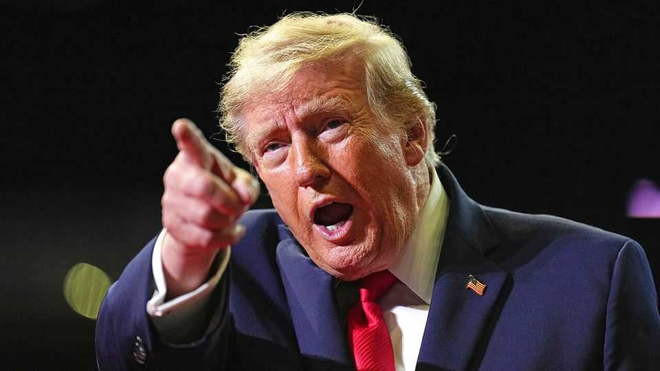

Hardly his finest hour
Donald Trump’s scheme to secure Russian diesel is scandalous

Oct 15th 2026
NEVER in the field of human conflict was so much risked by one man for so little. Donald Trump is threatening to cripple Ukraine in its fight for survival—and to expose Europe to Russian aggression—seemingly for the pitiful prize of minimising his losses in next month’s midterm elections. The hard question is what Ukraine and its allies should do.
On October 9th Mr Trump said he and Vladimir Putin had agreed that Russia will export 2.2m barrels of diesel, with the promise of more later. Mr Trump declared an energy ceasefire that Russia will not observe. His officials demanded that Ukraine should stop targeting Russian refineries, suggesting that America would withhold intelligence and weapons sales if it does not. On the night of October 13th a Pentagon-controlled part of the Starlink satellite system was degraded for fast-moving Ukrainian drones—stopping them hitting hard-to-spot targets in Russian-occupied territory.
All this is terrible for Ukraine, which must choose between losing crucial intelligence and weapons and carrying out the deep strikes on refineries that are its best answer to continuing Russian attacks on its cities. It also gives succour to Mr Putin. He can make some money and continue illicit oil sales to buyers such as India and China that America had been threatening with sanctions. If any deal holds, he also stands to gain Mr Trump’s help in protecting his battered refineries.
The deal is also shameful for America. Mr Putin terrorises his own people, kills Ukrainian civilians and is helping Iran fight America. Mr Trump’s repeated acts of indulgence towards him, supposedly in pursuit of peace, undermine deterrence, hastening further crimes.
And for what? Mr Putin may have promised to press Iran into a pre-election ceasefire, though his leverage is limited and it would be unlikely to last. And even if Russia actually has the diesel to export, which is in doubt, America burns 2.2m barrels every 13 hours. Presumably Mr Trump wants to take the credit if the price of diesel falls—and if it does not, he can always blame Ukraine. It’s a win-win!
What should Ukraine do? Defiantly hitting refineries would be self-defeating. American intel and Starlink’s satellites let Ukraine target Russia’s HQs, supply lines and radar, helping blunt its offensive power. Ukrainian jets need American ammunition to shoot down incoming drones and missiles.
But Ukraine does have options. The White House has suggested that Mr Trump’s energy truce covers only refineries—of which Ukraine has the grand total of one. Ukraine and its allies are rightly seeking to expand the ceasefire to all energy infrastructure. Even if they fail, highlighting this injustice bolsters efforts to seek help from the Senate in interceding with Mr Trump. They should remind him that losing Ukraine could brand him as a weak president. After the midterms, when Mr Putin’s diesel is worth less, Mr Trump may be prepared to move on, or simply become distracted.
Meanwhile, Ukraine should increase the tempo of attacks against other Russian infrastructure, including data centres and distribution hubs. Mr Putin needs to understand that Ukraine can threaten his rule and Russians need to be aware of the war being fought in their name. And such strikes demonstrate how Ukraine can still hit large, static targets without American help—including refineries if it is desperate.
Mr Putin appears to have concluded that he cannot win on the battlefield. His strategy now is to grind Ukraine down by making its cities uninhabitable in winter. How scandalous that Mr Trump has become his best weapon. ■